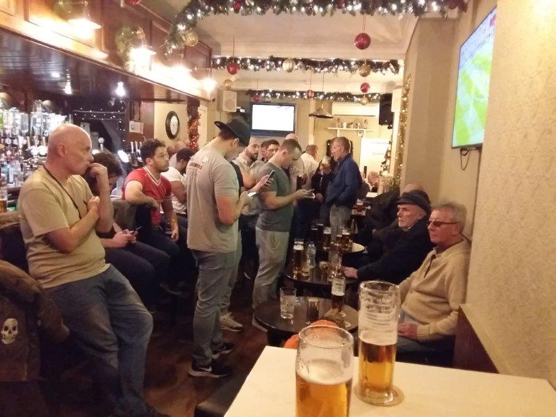
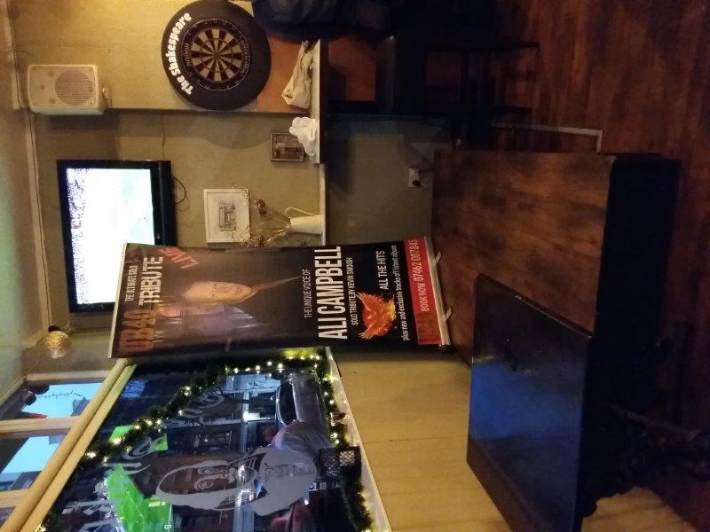

JIMMY BOOZERS' PHOTOS
 
×

Its London Derby day. I'm in the east end and its not the hammers playing but fuck me its lively. There's telly's a plenty for Arsenal Spurs. Eastenders are a mental bunch. I love them. The swagger, the fuck you attitude, the confidence -everything I want but lack. Everyone knows each other here. Big family vibe but i feel very welcome. Standard DB. A couple of wee whippersnappers messing about but few birds. There are more dart boards than females - 1. But maybe its just my timing. There's an older generation down the back and next gen in mid-section. A really old section down the side, in their official seats, just watching, calmly, observantly, chilling. These boys have seen a lot. A few of the young team are wearing base ball caps. I don't get that. Its not sunny out its December. Don't think there's a base ball game happening near here. Fortunately. Lagers (Fosters) £3.60. Pint of Guiness £3.70. Decent. Staff are on it as per. Screens are plentiful for the football. Tunes are class , 60s best of "keep on running" & "runnaway ah wa wa wa wa". Multi screen sport option available - max 2. There's a queue for the gents toilet cubicle here. Everyone on it. I missed almost all the game but Arsenal won 4-2. There's grown men dancing now. UB40 tribute act on in 20 minutes. What a time to be alive! Shall I stay for another? Rude not to. Place is bouncing. Its 5 pm on a Sunday. What a belter. Summary Quality - N'uff said
Bevvie Value - 2/5
Football Viewing Arrangements - 5/5
Fellow Clientele - 4/5
Banter & Vibe - 4/5
460 Bethnal Green Rd, Bethnal Green, LONDON, E2 0EA, UK